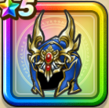

フエーゴのかぶと
攻略班 8.5点 / マシン系への耐性+5%ゾンビ系への耐性+5%マシン系への耐性+5%メラ属性耐性+2%ゾンビ系への耐性+5%オルゴ・デミーラへのダメージ+10%【バトマス】スキルの斬撃ダメージ+2%ヒャド属性斬撃・体技ダメージ+5%
くわしい特徴
【レベル別習得スキル】 Lv1マシン系への耐性+5% Lv5オルゴ・デミーラへのダメージ+10% Lv8攻撃力+5 Lv10ゾンビ系への耐性+5% Lv12【バトマス】スキルの斬撃ダメージ+2% Lv15ヒャド属性斬撃・体技ダメージ+5% Lv18マシン系への耐性+5% Lv20メラ属性耐性+2% Lv23守備力+7 Lv25ゾンビ系への耐性+5% 【限界突破スキル】 1凸さいだいMP+5 2凸守備力+5 3凸すばやさ+7 4凸さいだいHP+10